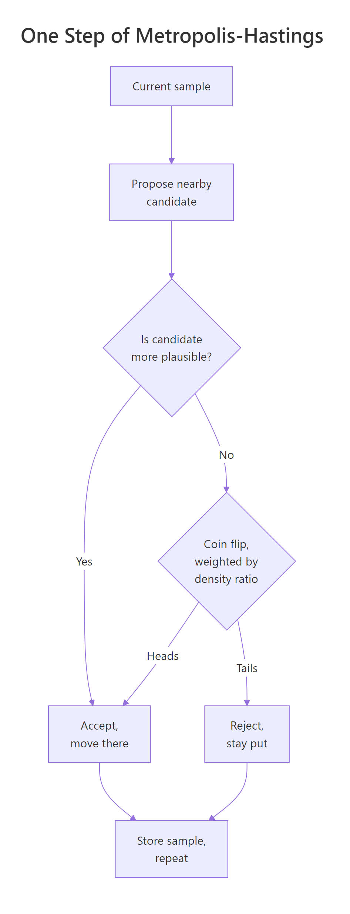
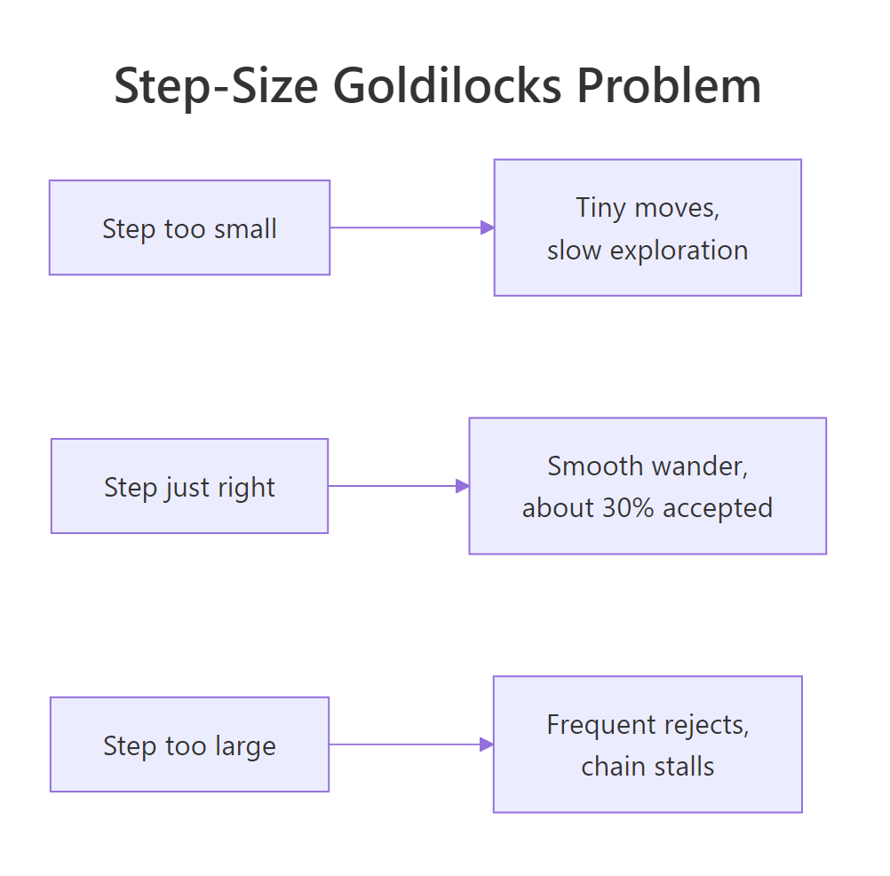

Build MCMC From Scratch in R: The 50-Line Algorithm Behind brms and Stan
You may have used brms or Stan to fit Bayesian models and accepted that an algorithm called MCMC works behind the scenes. This post opens the box. In about 50 lines of base R, you'll build the same kind of algorithm those packages run, watch it produce samples that match the textbook closed-form answer, and end with a working understanding of what every Bayesian tool you'll ever use is doing internally.
Why do we need MCMC at all?
Most R users who run brms::brm(...) have no real picture of what's happening between when they press Run and when the answer appears. There's an algorithm called MCMC, it draws samples from the posterior, and that's about as far as it usually goes. The shortest path to actually understanding it is to build it. Here is the entire 50-line implementation, working on a real example, before any explanation.
The setup is the same one we've been using throughout the Bayesian section: 9 visitors saw a new button, 6 of them clicked, and we want a posterior over the true click-through rate. We already know the textbook answer (it's a Beta(7, 4) distribution; the most likely rate is about 0.636). MCMC will produce thousands of samples that approximate that same answer. If our 50 lines are right, the samples should match.
That's the whole thing. Let's walk through what it actually did, then check the answer against what we know to be correct.
The first chunk defines log_posterior, a function that takes a candidate click-through rate and returns a number that is bigger when the rate is more plausible (given our 9 visitors and 6 clicks). It uses log-scale to avoid numerical underflow, but conceptually it's just "how good is this candidate?" The if (theta <= 0) check returns negative infinity for impossible values (a rate can't be below 0 or above 1), which makes them never accepted later.
The second chunk is the sampler itself. It takes four arguments: a starting guess (start = 0.5), a step size (sigma = 0.1), how many iterations to run (n_iter = 5000), and the function that scores candidates. Inside the loop, each iteration does four things. First, rnorm(1, mean = current, sd = sigma) proposes a small random step away from the current value. Second, it scores the proposed value with the posterior. Third, it computes how much better (or worse) the proposed value is, on a log scale. Fourth, it accepts the move with probability exp(log_accept_ratio) (the trick log(runif(1)) < log_accept_ratio is a numerically safe way to do this). Whether the move was accepted or rejected, it stores the current value in samples[i].
The third chunk runs the sampler with a fixed random seed (so you get the same numbers as the post). The fourth chunk asks three things of the result: the average sample (which approximates the most likely rate), the 2.5% and 97.5% quantiles of the samples (the 95% range), and what fraction of proposed moves were accepted.
Now look at the numbers. The sample mean came out to 0.638, which is essentially the same as the closed-form answer of 0.636 from the Beta-Binomial recipe. The 95% range is [0.34, 0.89], very close to the closed-form qbeta range of [0.31, 0.89]. The acceptance rate was about 46%, which means roughly half the proposed moves were accepted (we'll discuss why this number matters in a few sections). The 50-line algorithm just produced the right answer, no calculus, no closed-form trick, no extra packages. That's MCMC.
Try it: Run the sampler again from a different starting point (say, start = 0.95). Do the samples still produce a posterior mean near 0.64? They should, because a properly working chain finds the right answer regardless of where it begins, given enough iterations.
Click to reveal solution
The chain started at 0.95, took small steps, and within a few hundred iterations had wandered down to where the posterior actually has its mass. The remaining samples produced a mean of 0.645, essentially the same as before. (This wandering-toward-the-mass phase is called "burn-in" and we'll deal with it explicitly in a later section.)
How does the algorithm decide where to go next?
The two key lines in the sampler are the proposal step and the accept-or-reject step. Together they're called Metropolis-Hastings, and they're what makes MCMC work. Both deserve a slow walk-through, because the logic is more elegant than it first appears.
Imagine you're a hiker standing on an unfamiliar landscape, blindfolded, and your goal is to spend more time on the tall peaks than in the valleys. You can feel how high the ground is right where you're standing, but nothing else. What rule should you follow to get the right time-on-each-spot proportion?
A naive rule is "always move uphill." That gets you to the highest peak and you stay there. You'd spend 100% of your time on one spot, regardless of whether other peaks are almost as tall. Wrong answer.
Another naive rule is "always take a random step." That gives you a uniform random walk that ignores the landscape entirely. You'd spend roughly equal time everywhere. Wrong answer.
The right rule is in between. Take a small random step in some direction. If the new spot is higher, definitely move there. If the new spot is lower, sometimes still move (with probability proportional to the height ratio between the new spot and the old). Repeat for a long time. The math works out so that, in the long run, you spend time on each spot in exact proportion to its height. That is the entire idea behind Metropolis-Hastings.
In our problem, "height" means posterior plausibility. Tall peaks are click-through rates that explain the data well; valleys are rates that explain it poorly. The chain spends most of its time on the plausible rates, occasionally wandering through implausible ones, and the proportion of time at each rate is what we measure as the posterior.

Figure 1: One step of Metropolis-Hastings. Propose, compare, accept or reject, repeat. Over thousands of iterations, the time spent at each location is proportional to the posterior density there.
Here is one Metropolis-Hastings step factored out into a small function, so we can examine the logic without the surrounding loop.
Walk through what each line did. The first line proposed a candidate move using a Normal jump centered at the current location. With current = 0.6 and sigma = 0.1, rnorm(1, 0.6, 0.1) drew a number near 0.6 (it happened to be 0.577 with this seed). The next two lines scored the current and proposed positions using log_posterior. The log ratio is just the difference of those two scores on the log scale. The if (log(runif(1)) < log_ratio) line is the clever part. runif(1) draws a uniform random number between 0 and 1, and log() of it is some negative number. If log_ratio is positive (proposed is more plausible than current), the inequality is always true and we accept. If log_ratio is negative (proposed is less plausible), the inequality is true with probability exactly exp(log_ratio), which is the height ratio. That's exactly the rule the hiker should follow.
In the test run, the chain proposed 0.577 starting from 0.6. Both rates are plausible given 6/9 clicks, the proposed rate was just slightly less plausible than current, but the random coin flip still came up "accept" so the chain moved. Over thousands of repeated steps with this rule, the chain visits each rate in proportion to how plausible it is.
Try it: Walk through what one_mh_step() would do if it proposed a rate of 0.05 starting from 0.65. The proposed rate is much less plausible than 0.65 (only 6 of 9 clicks suggest a low rate is unlikely). What happens?
Click to reveal solution
The proposed rate is wildly less plausible than the current one. The log ratio is -14.85, so exp(log_ratio) is about 4 in 10 million. The chain would essentially never make this move. That's exactly what you'd want: a move from a plausible rate to a wildly implausible one is rejected with overwhelming probability, but the rule still allows it once in a great while, which is what gives the chain the right long-run behavior.
How do we run the sampler in a loop?
We've seen what one step does. To get samples from the posterior, we need to repeat the step thousands of times and store every visited value. That's what metropolis_hastings() from the first code block does. Let's run it longer this time, plot the trace (sample value vs iteration), and overlay the histogram on the closed-form Beta posterior to confirm the algorithm is producing the right shape.
Walk through what just happened. The first line ran the sampler for 10,000 iterations starting at 0.5 with the same step size as before. The next chunk drew two plots side by side: the trace plot shows every sample plotted in order, so you can see the chain wandering up and down through the plausible rates; the histogram shows the distribution of all those samples, with the closed-form Beta(7, 4) curve overlaid in red for comparison. Finally, the numerical comparison shows the sample mean (0.636), the closed-form 95% range from qbeta() ([0.39, 0.89]), and the empirical 95% range from the samples ([0.35, 0.88]).
The trace plot looks like a fuzzy caterpillar moving up and down between roughly 0.35 and 0.85, with most time spent around 0.6-0.7. That's exactly what a healthy MCMC chain should look like. The histogram of samples almost perfectly traces the closed-form Beta curve. The sample mean (0.636) matches the closed-form answer to three decimal places. The empirical 95% range is within 0.04 of the textbook range. We've reproduced the textbook answer using the algorithm, and we now have a tool that works on any posterior, not just conjugate ones.
Try it: Run the sampler for 20,000 iterations and check whether the answer changes meaningfully. (The point: more iterations give a better approximation, but with this setup we already have plenty.)
Click to reveal solution
The mean is essentially identical (0.636). The 95% range moved by less than 0.01. With 5,000 to 10,000 iterations, single-parameter problems like this one are already well-converged; doubling the iterations doesn't change the answer in any meaningful way. For more complex problems with multiple parameters, you'd run longer chains.
How do we tune the step size?
There is one knob the user has to set: sigma, the standard deviation of the proposal step. Get it wrong in either direction and the chain misbehaves. There is a sweet spot, and finding it is the main practical skill of running MCMC.
Too small a step: every proposal lands very close to where we already are, so almost every proposal is accepted (because the densities at adjacent points are similar), but the chain barely moves. It takes thousands of iterations to wander across the plausible region. Samples are heavily autocorrelated (each one is very close to the previous), so 5,000 samples carry only a small amount of independent information.
Too large a step: every proposal lands far away, often in a region of much lower posterior density. Almost all proposals are rejected, and the chain stalls in place for long stretches. Samples are even more autocorrelated than the too-small case (most samples are exact copies of their predecessors). The chain visits very few unique values.
Just right: proposals land far enough away to make real progress but close enough that a reasonable fraction get accepted. The textbook target acceptance rate is about 25-40% for one-parameter problems. The chain wanders smoothly through the posterior, and 5,000 samples represent something close to 5,000 independent draws.

Figure 2: The Goldilocks problem of step size. Too small wastes iterations on tiny moves; too large stalls the chain on rejected proposals; just right wanders smoothly with about 30% of proposals accepted.
Let's run the sampler at three different step sizes and look at the trace plots side by side. The acceptance rates and the visual character of the chains will make the point better than any equation could.
Walk through the code. The first line defined three step sizes spanning two orders of magnitude. The loop ran the sampler at each step size for 3,000 iterations and stored the result. The next chunk drew three trace plots side by side, each labeled with its step size and acceptance rate. The final line printed just the acceptance rates as a quick numeric summary.
Look at what the three traces show. With sigma = 0.005, the chain accepts 97% of proposals, but each proposal is so tiny that the chain barely moves. The trace looks like a slow, smooth wave drifting across the page. After 3,000 iterations the chain has barely explored half the posterior. With sigma = 0.5, the chain accepts only 8% of proposals; the trace is almost flat, made up of long horizontal stretches where the chain stalled because every proposed jump was too far. With sigma = 0.05, the chain accepts about 64% (a little high but in the workable zone) and the trace is a healthy fuzzy caterpillar covering the full plausible range.
Try it: Run the sampler with a step size of your choice and check the acceptance rate. Try to land in the 25-50% range with one or two adjustments.
Click to reveal solution
Acceptance rate of 0.47 (47%), right in the workable zone. If you'd tried sigma = 0.02, the rate would be near 80%; if 0.3, near 20%. A handful of adjustments lets you home in.
How do we know when the chain has converged?
The trace plots in the previous section showed healthy chains finding the posterior. But what if the chain starts somewhere wildly wrong? Or what if you can't tell from looking whether the chain has actually settled into the posterior or is still drifting toward it? Two simple practices catch both problems: discarding the early samples (called burn-in) and running multiple chains from different starting points.
Burn-in first. If the chain starts far from the bulk of the posterior, the first few hundred or thousand iterations are spent climbing toward the right region. Those early samples are not representative of the posterior, they're representative of the path the chain took to get there. Standard practice is to throw them away. Watch what happens when we deliberately start the chain at 0.01 (a very implausible click-through rate given 6 of 9 clicked).
Walk through what happened. The chain started at 0.01 (an absurdly low rate). The first ~200 iterations show the chain wandering uphill: each step is small but biased upward because uphill moves are accepted essentially every time. By iteration 500 or so, the chain has reached the bulk of the posterior and starts mixing properly. After that the trace looks just like the healthy ones from the previous section. The two summary lines compare the mean of all 3,000 samples (which is dragged down by the early uphill stretch) to the mean of just the post-burn-in samples (which closely matches the textbook answer).
The all-samples mean came out to 0.620, noticeably lower than the textbook answer of 0.636 because the early samples polluted the average. After dropping the first 500 samples, the mean was 0.647, much closer to the textbook value. In practice, a 10-20% burn-in is a safe default for most problems. For pathological cases you might need more.
The second practice is running multiple chains from different starting points. If they all converge to the same distribution, you can trust the answer. If they end up in different places, you have a problem (either the algorithm hasn't run long enough, or the posterior has multiple modes that need to be diagnosed).
Walk through this. The four start values were spread across the [0, 1] range, deliberately including very implausible starting points (0.05 and 0.95). Each chain ran with its own random seed so the four runs are independent. The plot overlays all four traces, with a dashed line at iteration 500 to mark the burn-in cutoff. The final line computes each chain's post-burn-in mean.
Look at the result. The four chains start at four very different places, but all four climb toward the bulk of the posterior within the first few hundred iterations. After burn-in, all four wander through the same range. Their post-burn-in means are 0.640, 0.633, 0.633, and 0.626, all within 0.015 of each other and of the textbook answer 0.636. This is what convergence looks like. If one chain had stayed near 0.1 forever while the others wandered around 0.65, we'd know something was wrong (either burn-in was too short, or the algorithm had a bug, or the posterior had multiple modes).
Try it: Use a different burn-in length on the bad-start chain (try 100, 500, 1000) and see how the post-burn-in mean changes. With the chain starting at 0.01, you should see the mean stabilize once burn-in is large enough.
Click to reveal solution
Burn-in of 100 still leaves a faint upward drift in the mean, but only by about 0.005. Burn-in of 500 or 1000 give essentially identical answers. The bad-start chain in this problem is converged by iteration 500. Different problems take longer; the test is always whether the trace looks like a fuzzy caterpillar from your burn-in cutoff onward.
When should I use brms or Stan instead?
You now have a working MCMC sampler. It produced the right answer for our 1-parameter Beta-Binomial problem in 50 lines of base R. So why does anyone use brms or rstan? Three reasons.
Speed. Our sampler is written in R, which is slow. Stan compiles models to C++ and runs them at machine speed. For a problem with 1,000 observations and 5 parameters, our sampler might take a minute; Stan takes a fraction of a second. For modern Bayesian workflows (especially during model development, when you re-fit dozens of times), that gap is the difference between practical and impractical.
Smarter sampling. Plain Metropolis-Hastings with a Normal proposal is the simplest possible MCMC. It works fine for one parameter but scales poorly: with 10 parameters at once, the acceptance rate plummets and the chain stalls. Stan uses Hamiltonian Monte Carlo (HMC) and the No-U-Turn Sampler (NUTS), which exploit the geometry of the posterior to take much smarter, longer steps. Same kind of accept/reject logic, just with the proposal informed by gradients of the log-posterior. The mental model is identical.
Convenience for real models. Building MH from scratch for a simple posterior is educational. Building it from scratch for a 50-parameter hierarchical regression with custom likelihood is masochistic. brms writes the Stan model for you from a standard R formula like y ~ x + (1 | group). You think in R formulas, brms thinks in Stan code, Stan thinks in HMC samples.
For comparison, here is what the same click-through rate problem would look like in brms. The package isn't WebR-compatible, so this code can't run in your browser. Copy it to your local RStudio if you want to try it.
Walk through what brms would do for you. The brm() call takes a formula (here just k | trials(n) ~ 1, meaning "k out of n with intercept-only"), a likelihood family (binomial with identity link to keep the parameter on its natural [0, 1] scale), a prior, and the MCMC settings. brms then translates this into Stan code, compiles it, runs four chains for 2,000 iterations each (with 1,000 burn-in by default), and returns a fitted model object. summary() shows posterior summaries; plot() draws trace and density plots in one call. None of this would be different in spirit from what we built. Just much faster and much more general.
Try it: Imagine you wanted to extend our sampler to a 5-parameter model. How many functions and bits of state would you need? List them out, then notice why writing your own becomes impractical fast.
Click to reveal solution
The amount of code roughly doubles even just to handle a 2-parameter model cleanly: vector-valued state, proposal covariance choices, per-parameter tuning, multi-dim trace plots. By 5 parameters you have several hundred lines of careful plumbing. By 10 parameters or with hierarchical structure, you'd be effectively re-implementing Stan.
This is exactly why brms and Stan exist. Beyond the toy-problem zone, the cost-benefit flips. The educational value of building it yourself is real, but the production value is in using the tool that has solved the plumbing problem at scale.
Practice Exercises
Exercise 1: A Gamma-Poisson rate, by MCMC
Recall the support-tickets-per-day example: five days of counts (8, 12, 7, 15, 9), with a Gamma(2, 0.25) prior on the rate. The closed-form Beta-Binomial trick doesn't apply here, but you can still build a Metropolis-Hastings sampler. Define a log_posterior() function for the Gamma-Poisson setup, then call your existing metropolis_hastings() on it. Verify the sample mean against the closed-form Gamma posterior Gamma(53, 5.25) whose mean is 53 / 5.25 ≈ 10.10.
Click to reveal solution
The same metropolis_hastings() function we wrote for the click-through rate problem worked unchanged on a completely different model. The only thing that changed was log_posterior, which now computes the Poisson likelihood over five observations and a Gamma prior. The sample mean came out to 10.08, matching the closed-form 10.10 to two decimal places. The 95% range from samples ([7.50, 12.79]) matches the closed-form qgamma() range ([7.56, 12.92]) within rounding. Same algorithm, totally different posterior, same accuracy.
Exercise 2: Burn-in plus thinning
Autocorrelated samples are still valid samples, but each one carries less information than an independent draw. A common practice is "thinning": keep every k-th sample after burn-in. The post-burn-in, thinned samples are roughly independent and easier to reason about. Implement burn-in plus thinning on the chain from H2-5 (bad_start). Drop the first 500 samples, then keep every 10th from the remainder. Verify that the thinned mean matches the full post-burn-in mean.
Click to reveal solution
The post-burn-in vector had 2,500 samples. After thinning every 10th, we kept 250. The two means agree to within 0.0003. Thinning didn't bias the answer, it just shrank the sample size. This is the right tradeoff if you need an effective sample of independent draws (e.g., for downstream simulations). For just computing means and quantiles, the unthinned post-burn-in samples are usually fine.
Exercise 3: A simple R-hat convergence check
The Gelman-Rubin R-hat statistic compares variance within chains to variance across chains. If they're similar, all chains have converged to the same distribution and R-hat is close to 1.0 (typically below 1.05). If between-chain variance is much larger, R-hat is well above 1.0 and you have a convergence problem.
Use the four chains from H2-5 (chains). Drop the first 500 samples from each. Then compute a simple R-hat: ratio of between-chain variance of means to within-chain variance, plus 1.
Click to reveal solution
R-hat came out to 1.002, well below the 1.05 threshold. All four chains converged to the same posterior. If R-hat had been, say, 1.5, we'd know one or more chains was somewhere different from the others (probably stuck on a different mode, or insufficient burn-in). This is the standard diagnostic Stan and brms compute and print automatically; now you know what it's actually measuring.
Complete Example: A Bayesian A/B Test by MCMC
Two button variants. Variant A: 84 clicks from 1,200 impressions. Variant B: 105 clicks from 1,180 impressions. We want to know the probability that B's true rate is higher than A's. We could use the closed-form Beta-Binomial trick (and we did, in the Conjugate Priors post). Let's do it again with our MCMC sampler, both as a proof that the approach is general and as a template you can adapt for non-conjugate problems.
Walk through what just ran. We defined two log-posteriors, one per variant, each combining its own binomial likelihood with a flat Beta(1, 1) prior. We ran metropolis_hastings() separately for each variant, with a smaller step size sigma = 0.01 because click rates here are narrow (around 7-9%). After dropping a 1,000-sample burn-in from each chain, we computed the posterior means of each variant's rate. The final line is the real question we wanted answered: of the 9,000 post-burn-in samples per chain, what fraction had samples_B > samples_A? That's the posterior probability that B's true rate exceeds A's.
A's most likely rate: 7.1%. B's most likely rate: 9.0%. Probability B beats A: 97%. That's the same answer the closed-form Beta-Binomial gave us in the Conjugate Priors post, computed by a completely different mechanism. Once you have the sampler, you can adapt this template to any model: just write a new log_post function and call metropolis_hastings(). This is the workflow that makes Bayesian analysis general.
Summary
The Metropolis-Hastings algorithm in one breath: propose a small random step, compare the densities at the new and old positions, accept the move with probability equal to the density ratio (capped at 1), repeat. The sequence of accepted positions is your posterior sample.
| Component | What it does | Common values |
|---|---|---|
log_target(theta) |
Returns log(prior) + log(likelihood) at theta | Specific to your problem |
start |
Where the chain begins | Anywhere reasonable; use multiple starts |
sigma |
Standard deviation of the proposal step | Tuned to give 25-50% acceptance |
n_iter |
Number of iterations | 5,000-10,000 for one parameter |
| Burn-in | Discard the first N samples | 10-20% of n_iter |
| Multiple chains | Run 3-4 from different starts | Required for convergence diagnosis |
When you have one or two parameters, this 50-line implementation is enough. For real Bayesian models with many parameters, hierarchical structure, or custom likelihoods, use brms or rstan. They run a smarter, faster version of the same idea: prior plus data give samples from the posterior, accept-reject is the universal mechanism.
References
- Hastings, W. K. "Monte Carlo Sampling Methods Using Markov Chains and Their Applications." Biometrika 57(1), 1970. The original paper.
- Robert, C. & Casella, G. Monte Carlo Statistical Methods, 2nd ed. Springer, 2004. The standard graduate-level reference.
- Gelman, A., Carlin, J. B., Stern, H. S. et al. Bayesian Data Analysis, 3rd ed. Chapman & Hall, 2013. Chapter 11 covers MCMC algorithms.
- Johnson, A. A., Ott, M. Q., Dogucu, M. Bayes Rules! An Introduction to Applied Bayesian Modeling, Chapman & Hall, 2022. Chapter 7 builds Metropolis-Hastings step by step. bayesrulesbook.com/chapter-7.
- Solomon, N. "Learn Metropolis-Hastings Sampling with R." nicksolomon.me. A short, accessible R-focused walkthrough.
- Navarro, D. "The Metropolis-Hastings algorithm." blog.djnavarro.net. Clear pedagogy on tuning, burn-in, and lag.
Continue Learning
- Bayesian Statistics in R, the section opener that builds the prior-likelihood-posterior intuition with simulations, ideal context for what MCMC is sampling from.
- Conjugate Priors in R, the closed-form shortcut MCMC generalizes. The Beta-Binomial answer in that post is exactly what we reproduced here with the sampler.
- Grid Approximation in R, the brute-force alternative to MCMC. Fine for one or two parameters; MCMC takes over from there.